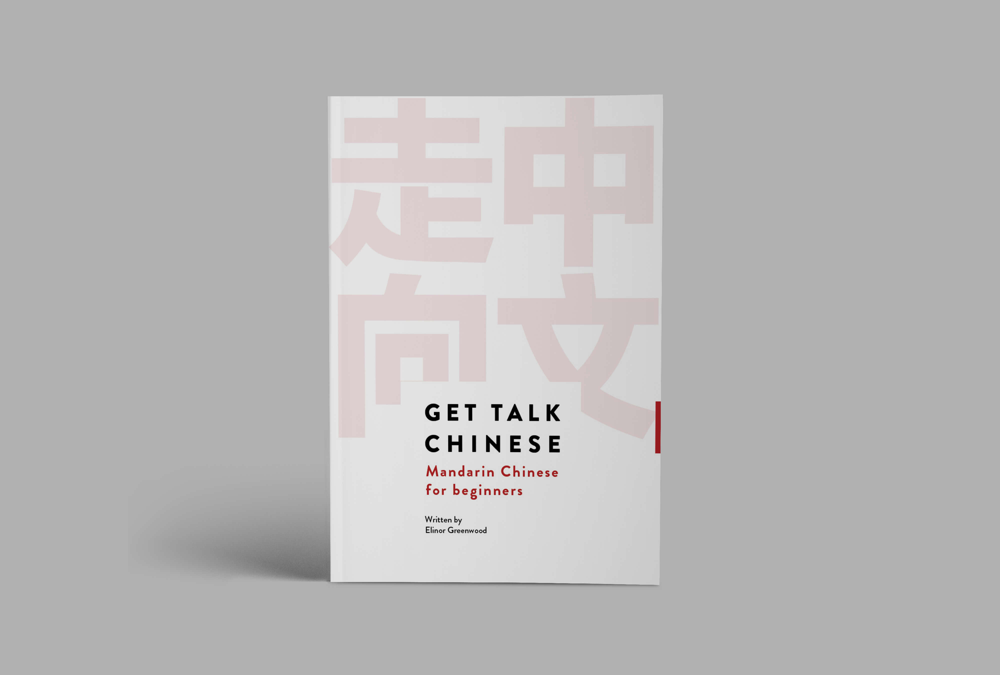
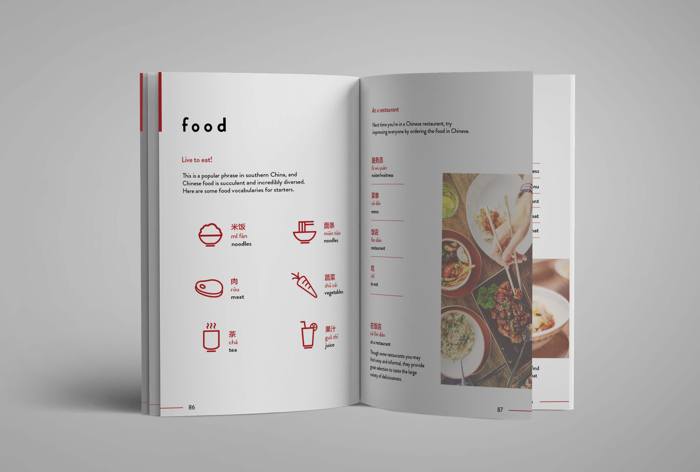
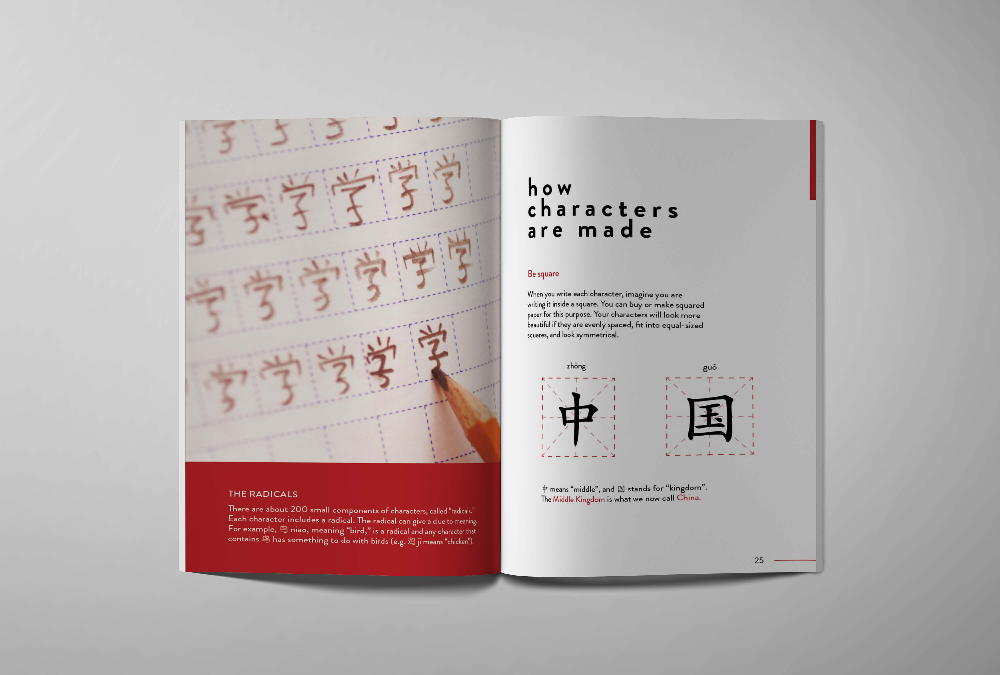
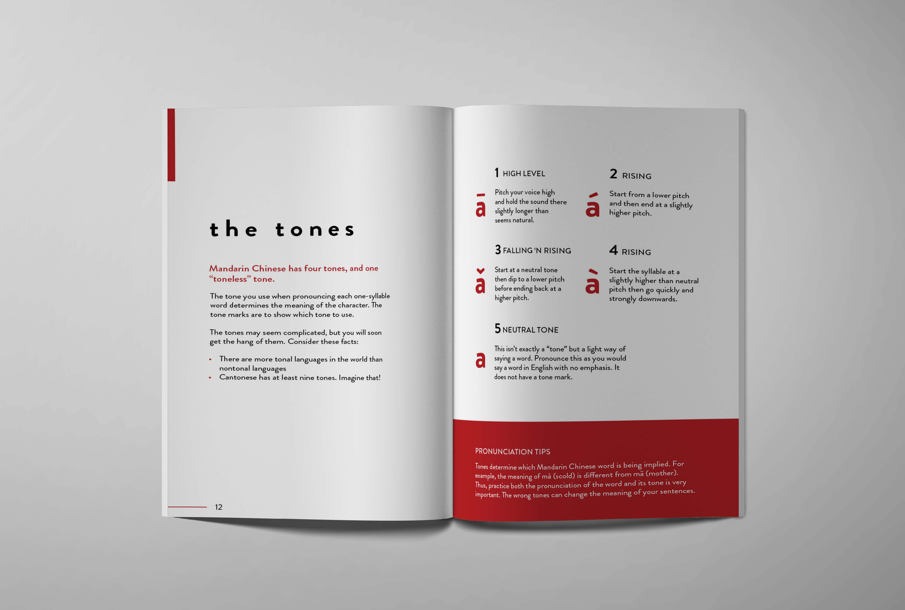
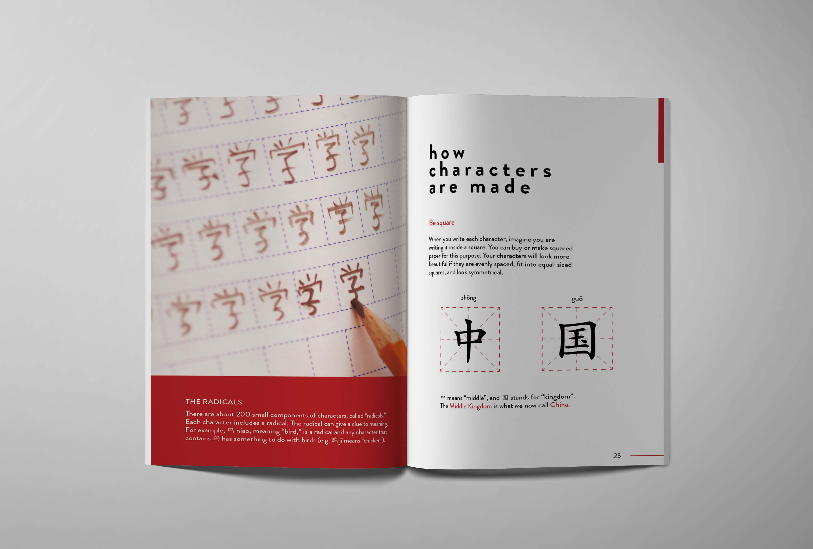
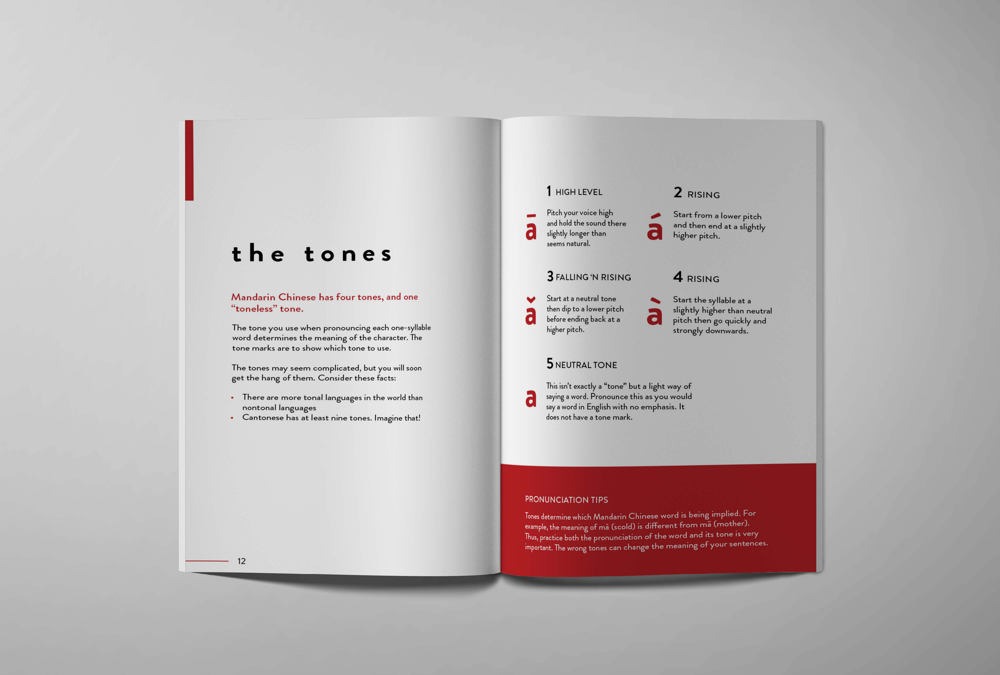

Get talking chinese: Book design
Redesign of Elinor Greenwood's Get Talking Chinese: Mandarin Chinese for Beginners. This book is a language guide for individuals who just start learning Mandarin Chinese. The book focuses on the fundamentals such as the pinyin system and basic conversation that can be used on daily basis.
Overview
As a language guide, this book contains a lot of useful information in learning the fundamentals of Mandarin Chinese. The original design has applied with bright background colours and the texts seem to be clustered because there are quite a lot of contents on one page. I chose to redesign this book and want to change to a more minimalistic and simple approach. With more space to spread out the content would create better readability and allow the contents to be more organized.
Objective
- Recreate the layout of the book
- Apply the minimalistic approach to reorganize the content flow and increase readability
- Create hierarchy of the contents to allow easy access of information
- Maintain the design elements that reflect the Chinese culture
Work Progress
Although the overall layout is different from the original design, as the book focuses on Chinese language and culture, I still need to maintain some design elements that reflects the concept. Therefore, along with the classic black and white, I added red to the colour palette. In this way, more contrast are adding to the layout and red, a symbolic colour to Chinese culture, can reflects the concept of the book.
To stay with the minimalistic approach, I did not use a lot of pictures, but instead, I created icons for specific vocabularies. For example, on the food chapter where new terms are introduced, each term is showed in chinese, pinyin pronunciation, english translation, as well as an icon that describes the term. Compare to a group of small realistic images, small icons can make the page look more cleaner and establish a consistent style with other design elements.
Quick drafts during work in progress


Final outcome
 

◀ previous project: YK PAO SCHOOL
next project: FI.SPAN ▶


◀ previous project: YK PAO SCHOOL
next project: FI.SPAN ▶